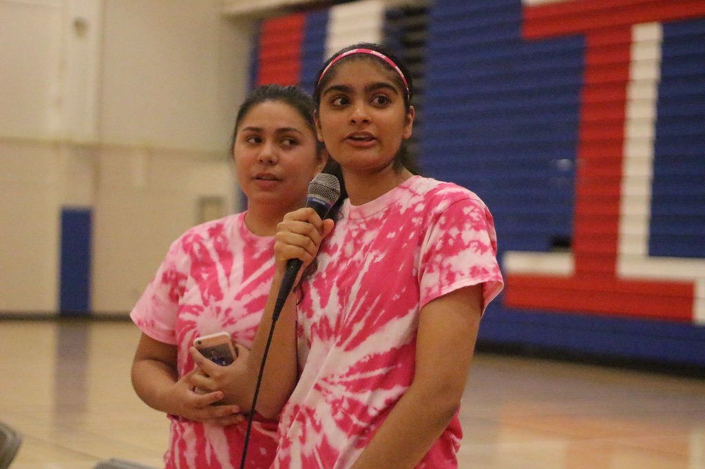
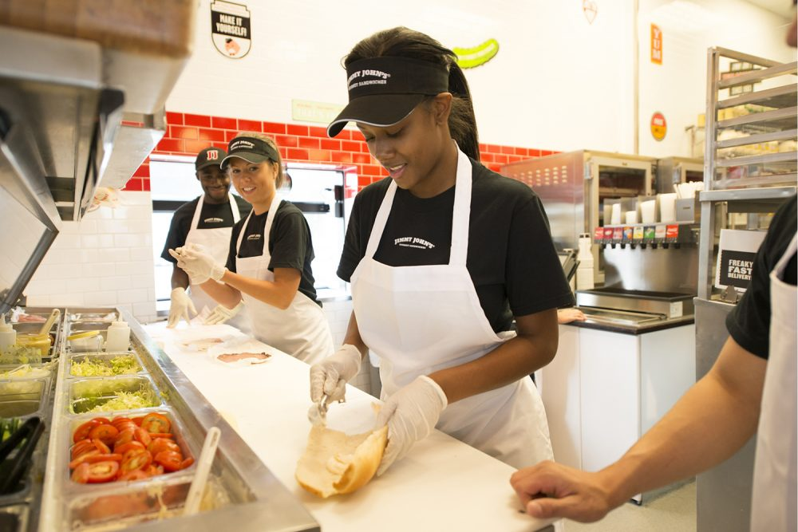

Gurpal Kour
UC Riverside '23
Hi my name is Gurpal Kour, and I am currently a freshmen at the
University of California, Riverside. I graduated Independence High School
in May 2019 with 3.8 GPA. In high school, I was on the volleyball and basketball
teams. Being on a team helped me understand what it means to be on a team, and
to efficiently work together to achieve a common goal. During both my junior and senior
year, I organized breast cancer awareness volleyball games, and we ended up
raising over $1,700. I learned how to lead a group of individuals alongside with how to follow my fellow teammates.
This experience also helped develop my communication skills. Before I was too shy to ask others for help, but
this experience helped me understand that it is okay to ask questions when I need help. Those skills came in handy when I started working
at an accounting agency and at Bath and Body Works. I was able to talk to customers
and clients easily and was able to find what they needed. At S.G. INC CPA, I was able
to learn how to properly answer calls and send emails. Answering the phone taught me how to
interact with tough clients. I became more patient and able to stay calm in
certain situations. At Bath and Body Works, I was easily able to talk to customers and my bosses.
I went up to the potential customers and asked them what they were looking for, and
whether I can offer my assistance. That experience taught me to believe in myself
and not back down. It is easier for me to talk to new people and introduce myself.
I have met many new and interesting people, and made many new friends with my newfound
confidence. Working at California's Great America, helped me realize the hard work my parents
put in to be able to support whatever me and my little brother want to do. This was my first job,
and my opened my eyes. I realized that I should not take anything for granted. Working in the hot
conditions at Great America was hard, but it made me feel amazing when I got my first paycheck.
After that job, I work hard for everything. I work until the task is perfect and done the right way.
California's Great America taught me that you sometimes have to work with people you may not get along with,
and you have to learn to manage the situation. You can not let that come in the way of your work. Towards the
end of my time at California's Great America, I came to the conclusion that its okay if I do not get along with
everyone. It made me realize that I can not satify everyone I encounter. After learning that life lesson, I feel
more free to express myself, and I stopped caring in what others think of me. I have matured and bettered
myself as I learned my lessons through my experiencses, and I will remember these lessons as I pursue my career.
Experience
Food Sales Associate
• Collaborated with other associates to increase sales
• Customer Service
• Worked as a Cashier
Receptionist
• Responsible for talking calls
• Working with QuickBooks
• Organizing files
Education
Independence High School
University of California, Riverside
Portfolio

